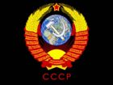

PCE
 De: La Frikipedia, la enciclopedia extremadamente seria.
De: La Frikipedia, la enciclopedia extremadamente seria.
| De la serie partidos políticos de ayer y de hoy:
|
| Partido Comunista Español
|
| 
|
| ϷЯФҐЗТѦЯЇФЅ DЄ ГФЅ ϷѦЇЅЄЅ ЦПЇФЅ!
|
|
| Fundación
|
532 a.C.
|
| Nombre Oficial
|
Partido Comunista Español
|
| Sede
|
Moscú
|
| Ideología
|
Fascismo Comunismo
|
| Nacionalidad
|
Espiñola
|
| Gobernador de
|
Unión Soviética
|
Afiliación intermamonial Internacional
|
Internacional Comunista
|
| Notas
|
ϷЯФҐЗТѦЯЇФЅ DЄ ГФЅ ϷѦЇЅЄЅ ЦПЇФЅ!
|
PCE o Partido Comunista de España es un partido formado por una panda de Cánovas del Castillo.
Historia
María Magdalena, hija de Pinky y Cerebro, emigró desde Nicolás II y se autoproclamó Reina de la República Soviética (sí, sí, reina de la república, con un par de ovarios).
Por su parte, Cánovas del Castillo era un humilde meretriz se hiciese con el gobierno de su país.
Intentó que María Magdalena dimitiese del gobierno; se fue a la Plaza Roja de Moscú con un cinturón de apóstoles tuvieron que emigrar e irse a España, donde fundó el PCE.
Desde que murió María Magdalena, el partido ha ido decayendo cada vez más y más; aunque hay muchos partidos políticos que le tienen envidia. Se le han realizado numerosos atentados entre los que destacan:
- Atentado en 408 a.C., realizado por el grupo integrista "Islámicos y Jamoneros".
- Atentado de 397 a.C., realizado por el partido político "Ciudadanos por una Palestina Nazi"
- Atentado en 671, pertrechado por el grupo terrorista "Alá es Glande, pero mi madre más".
- Atentado de 1148, en un principio fue atribuido a Drácula, pero más tarde se descubrió que lo había sido organizado y realizado por el Cid Campeador.
- Atentando de 1492, realizado por Cristóbal Colón y los Reyes Católicos.
- Atentado de 1506, fue también conocido como La masacre de las Sarasas el pintor y suicida Velázquez, se inmoló en el barrio de Sarasas de Toledo, que pertenecían al PCE.
- Atentado de 1508, fue realizado por la banda terrorista "Franco tiene el culo blanco, porque yo se lo lamo".
- Atentado de 1687, lo llevó a cabo Poncio Pilatos y se cobró la vida de 45 integrantes del PCE.
- Atentado de 1789, lo hizo el Cardenal Richelieu, porque debía liberar el odio que tenía contenido por la Revolución Francesa.
- Atentado de 1808, fue llevado a cabo por el grupo integrista "Viva el reggaeton y mi Papi Sabrosón".
- Atentado de 1914 (sí, sí, más de 100 años sin atentados. Parece increíble ¿no?). El anarquista Gavrilo Princip intentó matar a la presidenta del PCE, pero en vez de eso asesinó al Archiduque del Imperio Austro-Húngaro Francisco Fernando, lo que desencadenó la Primera Guerra Mundial.
- Atentado de 1987, un grupo de pollos armados con pico de metal mataron a 187 militantes del PCE y 65 quedaron ciegos.
Miembros
Entre los miembros del PCE que han sido más ilustres a lo largo de la historia, cabe citar los siguientes:
Himno
- Arriba pobres de la tierra,
- en pie, frikélica legión,
- vamos todos rojos y bien rojos.
- ¡Viva la Internacional!
- Desde Atocha hasta Chueca,
- bailemos hasta no poder mas,
- venga tíos, que tengo farlopa.
- ¡Viva la Internaiconal!
- Que somos frikis y rojos
- y tenemos el ojete roto,
- vamos a pajearnos con Star Wars.
- ¡Viva la Internacional!
Véase también
Autor(es):
- Alex2610
- Roms
- Torrenteforever
- Alzombie
- ABERGINA
- Gayoso
- Harry El del Pote
- Luis xiva
- Monomadrid
- Rodriatleti
Frikipedia 2005-2016, Licencia
GFDL 1.2 - Extraído por FrikiLeaks